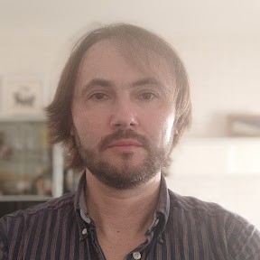

Pavel B. Ryzhakov
Associate Professor · Barcelona School of Civil Engineering, UPC · International Centre for Numerical Methods in Engineering
Publications
Journal publications (48)
- Enforcement of multi-point constraints in projection-based reduced order models. M. Menini, R. Zorrilla and P. Ryzhakov. Engineering with Computers, accepted 11/2026. IF(2025) 4.1, Q1 (JCR).
- A data-driven approach for morphological characterization and classification of flying inkjet droplets. A. Ares, A. Hashemi and P. Ryzhakov. Physics of Fluids, accepted 09/2026. IF(2025) 3.8, Q1 (JCR).
- A Comprehensive Review of Machine Learning in Proton-Exchange Membrane Fuel Cells: From Materials to Intelligent Systems. P. A. García, O. Sanumi, A. M. Ares de Parga, D. F. Rozo, P. Blanco, M. van der Heijden, M. McKague, M. Mehrnia, M. Batool, M. Barzegari, C. Bordons, A. Iranzo, P. Ryzhakov, J. T. Gostick, A. Forner, A. Torralba, J. Jankovic, M. Secanell. Applied Energy, accepted 09/2026. IF(2025) 12.1, Q1 (JCR).
- A stabilized mass-conserving sharp interface method for multiphase flow problems. A. Shamekhi, M. R. Hashemi, R. Codina and P. B. Ryzhakov. Journal of Computational Physics, Vol. 562, 115045, 2026. IF(2025) 3.9, Q1 (JCR). DOI
- Multiphase microfluidics: droplets, wetting dynamics and transport in complex media. T. Maric, M. Fricke, M. Hashemi and P. Ryzhakov. European Physical Journal ST, 2026. IF(2024) 2.5, Q2 (JCR). DOI
- Computational study of ElectroHydroDynamic regimes on planar films. Ch. Narváez, M. Hashemi, F. Almeida, F. Alexis, and P. Ryzhakov. Physics of Fluids 37, 072017 (2025), DOI, IF(2024) 4.3, Q1 (JCR).
- Machine learning-driven prediction of accompanying droplet structures based on primary droplet shape. A. Ares, A. Hashemi and P. Ryzhakov. Physics of Fluids, 37, 2025. IF(2024) 4.3, Q1 (JCR). DOI
- Data-Driven Analysis of Droplet Morphology in Inkjet Systems: Toward Generating Stable Single-Drop Regimes. A. Hashemi, A. Ares and P. Ryzhakov. European Physical Journal ST, 2025. IF(2024) 2.3, Q2 (JCR). DOI
- Computational ElectroHydroDynamics in microsystems: A review of Challenges and Applications. Ch. Narvaez, A. Hashemi, M.R. Hashemi, L. Segura and P. Ryzhakov. Archives of Computational Methods in Engineering, 2024. IF(2024) 12.1, Q1 (JCR). DOI
- Optimization-based Level-Set Re-initialization: A Robust Interface Preserving Approach in Multiphase Problems. A. Hashemi, M.R. Hashemi, P. Ryzhakov, R. Rossi. Computer Methods in Applied Mechanics and Engineering, 2023. DOI IF(2022) 7.6, Q1 (JCR). Accepted 13/12/2023.
- Enriched finite element approach for modeling discontinuous electric field in multi-material problems. Ch. Narvaez, M.R. Hashemi, P. Ryzhakov, J. Pons-Prats, H. Owen. Finite Elements in Analysis and Design, 2023. IF(2022) 3.1, Q1 (JCR). Volume 225 (2023), 104007, Https://authors.elsevier.com/sd/article/S0168-874X(23)00100-2
- Advances in Numerical Modeling of Coupled CFD Problems. P. Ryzhakov, J. Marti, M.R. Hashemi. Special issue of Journal of Marine Science and Engineering (ISSN 2077-1312). Editorial note. J. Mar. Sci. Eng. 2023, 11(5), 978 DOI IF (2022): 2.9, Q1 (JCR)
- An enriched finite element/level-set model for two-phase electrohydrodynamic simulations. Ch. Narvaez, M.R. Hashemi, P.B. Ryzhakov and J. Pons-Prats. Physics of Fluids 35, 012004 (2023) DOI. IF(2022): 4.6, Q1(JCR).
- Improving Glass-Fiber Epoxy Composites via Interlayer Toughening with Polyacrylonitrile / Multiwalled Carbon Nanotubes Electrospun Fibers. Ch. Narváez-Muñoz, C. Zamora-Ledezma, P. Ryzhakov, J. Pons-Prats, J. Elango, C. Mena, F. Navarrete, V. Morales-Flórez, R. Cano-Crespo, L. J. Segura. Journal of Applied Polymer Science, Volume 140, Issue 5, IF (2022): 3.057, Q2 (JCR), Q1(Scopus/SCImago). DOI
- Adaptive breakwaters with inflatable elements for coastal protection. Preliminary numerical estimation of their performance. P. Ryzhakov, F. Hermosilla, P.-A. Ubach, E. Oñate. Ocean engineering Volume 251, 110818 (2022), IF (2020): 3.795, Q1 (JCR). Open Access Publisher link
- An Enhanced Non-Oscillatory BFECC Algorithm for Finite Element Solution of Advective Transport Problems. M. Hashemi, R. Rossi, P. Ryzhakov. Computer Methods in Applied Mechanics and engineering, Volume 391, (2022), 114576, IF (2022): 7.2, Q1 (JCR). Open Access Publisher link.
- A unified arbitrary Lagrangian-Eulerian model for fluid-structure interaction problems involving flows in flexible channels. P. Ryzhakov, J. Marti, N. Dialami. Journal of Scientific Computing 90 Issue 3, Article number: 85 (2022), IF (2022) 2.5, Q1 (JCR), DOI.
- Towards Droplet Dynamics Simulation in Polymer Electrolyte Membrane Fuel Cells: Three-Dimensional Numerical Modeling of Confined Water Droplets with Dynamic Contact Angle and Hysteresis. M. Hashemi, P. Ryzhakov, and R. Rossi. Physics of fluids IF (2022) 4.98, accepted 18/11/2021. Selected as "Editor's pick". DOI, Open access: DOI.
- Three Dimensional Modeling of Liquid Droplet Spreading on Solid Surface: an Enriched Finite Element/Level-set Approach. M. Hashemi, P. Ryzhakov and R. Rossi. Journal of Computational Physics: IF (2020):3.553, Q1 (JCR). Open access: DOI
- Determination of the operational parameters for the manufacturing of spherical PVP particles via electrospray. C. Narvaez, P. Ryzhakov, J. Pons. Polymers (ISSN 2073-4360), IF (2020): 3.426, Q1 (JCR). Polymers 2021, 13(4), 529; DOI.
- An Enriched Finite Element/Level-Set Method For Simulating Two-Phase Incompressible Fluid Flows With Surface Tension. M. Hashemi, P. Ryzhakov and R. Rossi. Computer Methods in Applied Mechanics and engineering: Vol. 370, 2020. IF (2019): 5.763, Q1 (JCR). DOI.
- Improving accuracy of the moving grid Particle Finite Element Method via a scheme based on Strang splitting. J. Marti and P. Ryzhakov. Computer Methods in Applied Mechanics and engineering, Vol. 369, DOI 05/06/2020. IF (2019): 5.763, Q1 (JCR).
- A particle finite element based model for droplet spreading analysis. E. Mahrous, A. Jarauta, Th. Chan, P. Ryzhakov, A. Weber, R. Valéry Roy, and M. Secanell. Physics of Fluids, Vol 32/4, DOI. IF(2019): 3.514, Q1 (JCR)
- Computational modeling of the fluid flow and the flexible intimal flap in type B aortic dissection via a monolithic Arbitrary Lagrangian/Eulerian fluid‐structure interaction model. P. Ryzhakov, E. Soudah, N. Dialami. International Journal for Numerical Methods in Biomedical Engineering, DOI. IF (2019): 2.097, Q2 (JCR), Q1 (Scopus).
- A pseudo-DNS method for the simulation of incompressible fluid flows with instabilities at different scales. S. Idelsohn, N. Nigro, A. Larreteguy, J. Gimenez, P. Ryzhakov. Computational Particle Mechanics (2019). DOI. IF (2019): 1.696, Q2(JCR), Q1 (Scopus)
- On the relevance of accounting for fluid-structure interaction effects in the numerical studies of type B aortic dissection. P. Ryzhakov. Biomed. Jour. of Scien. & Tech. Research (2019), DOI
- An explicit-implicit finite element model for the numerical solution of incompressible Navier-Stokes equations on moving grids. J. Marti, P. Ryzhakov. Computer Methods in Applied Mechanics and Engineering, DOI. IF (2019): 5.763, Q1 (JCR)
- An explicit/implicit Runge-Kutta-based PFEM model for the simulation of thermally coupled incompressible flows. J. Marti, P. Ryzhakov. (2019), Computational Particle Mechanics, DOI. IF (2019): 1.696, Q2(JCR), Q1 (Scopus).
- An implicit surface tension model for the analysis of droplet dynamics. A. Jarauta, P. Ryzhakov, M. Secanell, J. Pons. (2018), Computational Physics, Volume 374, pp. 1196-1218. DOI. IF (2018): 2.845, Q1 (JCR).
- A Semi-Explicit Multi-Step Method for Solving Incompressible Navier-Stokes Equations. P. Ryzhakov, J. Marti. Applied Sciences (SI: Mechanical Engineering) (2018), 8 (1), 119-127, DOI. IF (2018): 2.217, Q2 (JCR: Physics, applied).
- Challenges in Computational Modeling of Two-Phase Transport in Polymer Electrolyte Fuel Cells Flow Channels: A Review. A. Jarauta, P. Ryzhakov. Archives of Computational Methods in Engineering (2018), Volume 25, Issue 4, pp 1027–1057, DOI. IF (2018): 7.242, Q1 (JCR).
- A finite element model for fluid–structure interaction problems involving closed membranes, internal and external fluids. PB Ryzhakov, E Oñate. Computer Methods in Applied Mechanics and Engineering (2017), 326, 422-445. DOI. IF (2017): 4.441, Q1 (JCR).
- Fast fluid-structure interaction simulations using a displacement-based finite element model equipped with an explicit streamline integration prediction. P. Ryzhakov, J. Marti, S. Idelsohn, E. Oñate. Computer Methods in Applied Mechanics and Engineering, Vol. 315, pp. 1080–1097, DOI. IF (2017): 4.441, Q1 (JCR).
- Lagrangian finite element model for the 3D simulation of glass forming processes. P. Ryzhakov, J. García, E. Oñate. Computers & Structures 177 (2016) 126–140. IF: 2.887, Q1 (JCR). DOI
- An axisymmetric PFEM formulation for bottle forming simulation. P. Ryzhakov. Computational Particle Mechanics, Vol. 4/1, pp. 3-12 (2017), DOI. IF: 2.632, Q2 (JCR), Q1 (Scopus).
- On the application of the PFEM to droplet dynamics modeling in fuel cells. P. Ryzhakov, A. Jarauta, M. Secanell, J. Pons-Prats. Computational Particle Mechanics, DOI 10.1007/s40571-016-0112-9, (2017), Volume 4, Issue 3, pp 285–295. IF: 2.632, Q2 (JCR), Q1 (Scopus).
- Numerical study of droplet dynamics in a polymer electrolyte fuel cell gas channel using an embedded Eulerian-Lagrangian approach. A. Jarauta, P. Ryzhakov, M. Secanell, P. Waghmare, J. Pons-Prats. Journal of Power Sources, Vol. 323 (2016) pp. 201-212. IF: 6.395, Q1 (JCR). DOI
- An embedded approach for immiscible multi-fluid problems. P. Ryzhakov and A. Jarauta. Int. Jour. for Num. Methods in Fluids, 21/10/2015, DOI 10.1002/fld.4190, Volume 81, Issue 6, pp. 357–376, IF: 1.447, Q2 (JCR), Q1 (Scopus).
- A modified fractional step method for fluid-structure interaction problems. P. Ryzhakov. Revista Intern. de Met. Num. en Ingeneria, Vol. 33, Nº 1-2, 2017, pp. 58-64 DOI 10.106/j.rimni.2015.09.002, IF: 0.445, Q4 (JCR), Q2 (Scopus).
- A semi-analytical model for droplet dynamics on the GDL surface of a PEM fuel cell cathode. A. Jarauta, M. Secanell, J. Pons-Prats, P. Ryzhakov, S. Idelsohn, E. Oñate. Hydrogen Energy, 40 (15), pp. 5375-5383, 2015. IF: 3.205, Q2 (JCR), Q1 (Scopus). DOI
- A two-step monolithic method for efficient simulation of incompressible flows. P. Ryzhakov, J. Cotela, R. Rossi, E. Oñate. Int. Jour, for Num. Methds. in Fluids, Vol. 74, Issue 12 (2014) pp. 919–934, IF: 1.244, Q2 (JCR), Q1 (Scopus). Doi: DOI
- Analysis of the melting, burning and flame spread of polymers with the Particle Finite Element Method. E. Oñate, J. Marti, P. Ryzhakov, R. Rossi, S. Idelsohn. Computer Assisted Methods in Engineering and Science. 20 - 3, pp. 165 - 184. 2013. Q4 (Scopus)
- Modelling and simulation of the sea-landing of aerial vehicles using the Particle Finite Element Method. P. Ryzhakov, R. Rossi, A. Viña, E. Oñate. Int. Journal of Ocean Engineering, Vol. 66 (2013), pp. 92–100, IF: 1.615, Q1 (JCR).DOI
- Combined Eulerian-PFEM approach for analysis of polymers in fire situations. J. Marti, P. Ryzhakov, S. Idelsohn, E. Oñate. Int. Jour. for Num. Methds. in Eng. Vol. 90-9 (2012), pp. 782-801, IF: 2.068, Q1 (JCR). DOI
- Improving mass conservation in simulation of incompressible flows. P. Ryzhakov, R. Rossi, E. Oñate, S. Idelsohn. Int. Jour. for Num.Methds. in Eng. Vol. 90-12 (2012), pp. 1435-1451, IF: 2.068, Q1 (JCR)
- An algorithm for the simulation of thermally coupled low speed flow problems. P. Ryzhakov, R. Rossi, E. Oñate. Int. Jour. Num. Meth. in Fluids Vol. 70-1, pp. 1-19, 2012. IF: 1.352, Q2 (JCR), Q1 (Scopus). DOI
- A monolithic Lagrangian approach for fluid-structure interaction problems. P.B. Ryzhakov, R. Rossi, S. Idelsohn, E. Oñate. Computational Mechanics, Vol. 46-6, pp. 883-899, 2010, IF: 2.656, Q1 (JCR) DOI
- A monolithic FE formulation for the analysis of membranes in fluids. R. Rossi, P. B. Ryzhakov, E. Oñate. International Journal of Spatial Structures, Vol. 24-4, pp. 205-210, 2009
Books and book chapters
- Tailored Electrospun Biomaterials for Tissue Engineering: Recent Progress, Current Challenges, and Future Trends, authors: Camilo Zamora-Ledezma, Dulexy Solano-Orrala, Christian Narváez-Muñoz, Irene Bonadies, Giovanna Gomez d'Ayala, Pavel Ryzhakov, Frank Alexis. In BOOK: Functionalized Materials Applications in Biomedicine, CRC Press, 2025, ISBN 9781003642855
- Lagrangian finite element methods for coupled problems in fluid mechanics, authors: P. Ryzhakov, E. Oñate, R. Rossi, S. Idelsogn. Monograph. M121, CIMNE, 2010, ISBN 978-84-96736-97-9
- Advances in the Particle Finite Element method (PFEM) for solving coupled problems in engineering, authors: E. Oñate, S.R. Idelsohn, M.A. Celigueta, R. Rossi, J. Marti, J.M. Carbonell, Pavel Ryzhakov and B. Suárez. A E. Oñate and R. Owen (eds.), Particle-Based Methods, Computational Methods in Applied Sciences, Vol. 25, pp 1-49, Springer, 2011.
Edited volumes and special issues
- P. Ryzhakov (co-editor). EPJ ST Special Issue: Multiphase microfluidics: Droplets, wetting dynamics and transport in complex media.
- P. Ryzhakov (ed.). Proceedings of the International workshop on Inkjet Technology and Beyond: Experiments, CFD, and Artificial Intelligence (2024). DOI.
- Special Issue: Element-Based Methods for the Solution of Engineering Problems, editors: J. Marti and P. Ryzhakov, Applied Sciences, EISSN 2076-3417, Publisher link.
Research
Research interests
Computational fluid dynamics, multiphysics, fluid–structure interaction, and compressible flows.
Projects as principal investigator or coordinator
- DIDRO Towards establishing a Digital twin for manufacturing via drop-on-demand inkjet printing. «Proyectos Estratégicos Orientados a la Transición Ecológica y a la Transición Digital» 2021, de la Agencia Estatal de Investigación. 2022-2024. TED2021-130471B-I00
- DECIMA: DEsign-supporting Computational framework for modelIng Coupled Microfluidics in Advanced manufacturing. 2023-2026,“Generación de Conocimiento”, Agencia Estatal de Investigación.
- Purificación de agua a través de una novedosa membrana electro-hilada ('Accions de cooperació', 2022-B008, 2022–2023)
- Distributed and shared memory implementation of the multiscale two-phase flow model for analyzing water transport in fuel cells on HPC architectures: 15/03/2021 - 15/09/2021 (Prace preparatory access, Marenostrum (Barcelona Supercomputer))
- AMADEUS Advanced Multi-scAle moDEling of coupled mass transport for improving water management in fUel cellS: 2019-2022 (sponsor: Spanish Ministry of Economy and Competitiveness)
- VIDRESIM Modelización y simulación de conformación del vidrio: 2017-2018 (sponsored by RC Glass via NUCLIS program of Catalan government)
Projects as a researcher
- Purificación de agua a través de una novedosa membrana electro-hilada. XXX Conv. d'ajuts per a activitats de Cooperació, CCD, 2022-2023.
- ANACONDA: Brain®, micro-catéter de acceso distal para trombectomías cerebrales y tratamiento del accidente cerebrovascular isquémico agudo: 2019-2021
- PRO2: Ecosistema d'R+D+i per la implementació i adopció de la Fabricació Additiva /Impressió 3D a fabricació de productes indistrials i als processos industrials de producció (Comunitat RIS3CAT Llavor3D): 2018-2021
- ACASIAS: Advanced Concepts for Aero-Structures with Integrated Antennas and Sensors, H2020, EC, 2017-2020.
- COOLING TOWERS: Design and optimization of cooling towers. Funding agency: Natural Science and Engineering Research Council of Canada, 2018-2021.
- COMETAD: Desarrollo de técnicas computacionales y experimentales para el análisis y el diseño de polímeros retardantes al fuego: 2015-2018
- GAINN4MOS: SUSTAINABLE LNG OPERATIONS FOR PORTS AND SHIPPING – INNOVATIVE PILOT ACTIONS (GAINN4MOS), INEA, EC, 2014-2017
- IMPRESIÓN Desarrollo de una herramienta para el tratamiento de imágenes de presas tomadas mediante drones y su integración en el sistema de auscultación de la presa: (IMPRESIÓN) 2016-2019, Nacional, MEIC
- SMILER Desarrollo de un Sistema basado en MachIne Learning para la Reducción de pérdidas en redes de distribución de agua (SMILER). National. MCIU, 2018-2020.
- COFRE Diseño Industrial de una COmpuerta Fusible REcuperable para la mejora de la Seguridad Hidrológica de las Presas, Nacional, MCIU, 2018-2021.
- ECOVENT Nuevo sistema de ventilación para túneles en construcción por métodos convencionales, eficaz y eficiente energéticamente, minimizando la emisión de contaminantes gaseosos y partículas., National, 2015-2018.
- ULITES: Ultra-lightweight structures with integrated photovoltaic solar cells: design, analysis, testing and application to an emergency shelter prototype, 2013–2015
- Numerical analysis of a FUEL SLOSHING TANK (CN-11-024) in cooperation with European Space Agency (ESA), 2011-2012
- Balanced European Conservation Approach – ICT services for resource saving in social housing, 2011-2013
- “Sea-landing studies of the intermediate eXperimental Vehicle IXV using the Particle Finite Element Method” in cooperation with CIMSA Ingeneria de Sistemas S.A. , 2007-2008
- FLUISTCOM: Fluid-structure interaction for combustion chambers, in cooperation with Siemens AG and DLR, 2006-2008
- COLTS Casting of Large Ti Structures, from 2010, European, FP7
- T-SIMULAS: Desarrollo de nuevas TEcnologías de SIMULación de procesos de fabricación para inyección de Aluminio SemiSólido
- NICOMP: Computational research to support the development of swimming and hovering underwater unmanned vehicles (UUV) by NRL. International.
Invited talks, seminars and short courses
- Droplet Characterization in Drop-on-Demand Inkjet Systems through Geometric Analysis with Predictive Modules”, Droplet dynamics team presentation, KRATOS Seminar series, Barcelona, 06/05/2024. Authors: A. Ares, A. Hashemi, N. Sibuet, P. Ryzhakov
- Multiphase microfluidic flows studies, Droplet dynamics team presentation, KRATOS Seminar series, Barcelona, 17/07/2023. Authors: P. Ryzhakov, A. Hashemi, M.R. Hashemi, Ch. Narvaez, A. Shamekhi
- Numerical modeling of microfluidics. The 3rd Aulas CIMNE Symposium. 11-12 May 2023, Guanajuato, Mexico.. Authors: P. Ryzhakov, A. Hashemi, M. Hashemi, Ch. Narvaez, R. Rossi
- Introduction to Reduced Order Modeling (intensive 3hr course). Winter School, An excursion into computational methods, Barcelona 23-27/01/2023. P. Ryzhakov & R. Bravo
- Water management in fuel cells: challenges and possible solutions. Authors: P. Ryzhakov, M. Hashemi, A. Jarauta. Seminar given in the framework of the Erasmus mundus Master in Computational Mechanics, Barcelona, 26/10/2022.
- Enriched finite element method for sharp interface capturing and its impact on suppressing spurious currents in droplet dynamic problems (seminar given at CRC series (1192), TU Darmstadt, Germany. Together with M. Hashemi), 19/07/2022.
- Numerical modeling of multiphysics problems: modern challenges (seminar given at Queensland University of Technology, Brisbane, Australia, 2018).
- Embedded approaches for thermomechanical problems (MuMoLAde seminar, together with J. Marti, Barcelona, Spain, 2014).
Selected conference contributions
- High-fidelity to real-time: building trustworthy digital twins for inkjet systems (Invited presentation). P. Ryzhakov, M.R. Hashemi, A. Hashemi, A.R. Shamekhi, R. Codina, R. Rossi. IMI Europe Inkjet Development Conference, 18 - 19 March 2026, Hamburg, Germany.
- Manifold-Informed Neural Network (MINN) for Prediction of Interface Evolution in Two-Phase Flowse A. Hashemi, M.R. Hashemi, A. Ares , R. Rossi, P. Ryzhakov. EDFC2 - EFDC2 - 2nd European Fluid Dynamics Conference, 26-29 August 2025, Ireland, Dublin.
- An Enriched Finite Element (E-FEM)/ Conservative Level-Set Approach for Modeling Two-Phase Flows with and without contact line A. Shamekhi, M.R. Hashemi, A. Hashemi, P. Ryzhakov and R. Codina.SPANISH FLUID MECHANICS CONFERENCE 2025 (SFMC25), 24-27 June 2025, Malaga, Spain.
- An E-FEM/Conservative Level-Set Approach for Microfluidic Two-Phase Flows in Contact with Solids P. Ryzhakov, A. Shamekhi, A.R. Hashemi, M.R. Hashemi, and R. Codina. 13th International Conference on Mathematical Modeling in Physical Sciences. September 30-October 3, 2024. Kalamata, Greece.
- Machine-Learning-Based Droplet Shape Prediction in Piezo-Based Drop-on-Demand Inkjet Devices A. Hashemi, M.R. Hashemi, A. Ares, R. Rossi and P.B. Ryzhakov. EFDC1 (1st European Fluid Dynamics Conference), September 16-20, 2024, Aachen, Germany
- An Enriched Finite Element/Conservative Level-Set Approach for Analysis of Microfluidic Two-Phase Flows A. Shamekhi, M.R. Hashemi, P.B. Ryzhakov and R. Codina. ECCOMAS 2024, June 3-7, 2024, Lisbon, Portugal
- Droplet Characterization through Neural Network Geometric Analysis and Classification for Drop-on-Demand Inkjet Systems. A.Ares, A. Hashemi, N. Sibuet, R. Rossi, P.B. Ryzhakov. ECCOMAS 2024, June 3-7, 2024, Lisbon, Portugal.
- An enriched finite elements approach for multi-phase microsystems. C. Narvaez-Munoz, M.R. Hashemi, P.B. Ryzhakov, J. Pons-Prats and J. Marti. ParCFD'2023 34th International Conference on Parallel Computational Fluid Dynamics, May 29-31, 2023, Cuenca, Ecuador
- Challenges in modeling inkjet printing: physical and numerical aspects. A.R. Hashemi , P.B. Ryzhakov, M.R. Hashemi, R. Rossi, N. Dialami and R. Zorrilla. 2nd Spanish Fluid Mechanics Conference Barcelona (2 - 5 July 2023)
- A robust level-set reconstruction scheme for the modelling of large droplet deformations, M. Hashemi*, A. Hashemi, R. Rossi, P. Ryzhakov, ECCOMAS Coupled Problems 2023, June1-4, Crete, Greece.
- Towards electrohydrodynamic cone-jet regime simulation in planar films for microfluidic-based manufacturing, C.Narváez-Muñoz, M.R.Hashemi, P.B.Ryzhakov*, J.Pons-Prats, ECCOMAS Coupled Problems 2023, June1-4, Crete, Greece.
- Анна Радлова - переводчица Шекспира. О двух вариантах перевода "Отелло". П. Рыжаков. Международная научная конференция « Миры Михаила Кузмина : к 150 летию со дня рождения », 20-22/10/2022, Санкт-Петербург.
- Data-driven approaches as a possible means for modeling water transport in gas diffusion layer of fuel cells. P. Ryzhakov, M. Nuñez, M.R. Hashemi, R. Rossi, O. Antonova, 8th European Congress on Computational Methods in Applied Sciences and Engineering 5-9 June 2022, Oslo, Norway
- Enriched finite element formulation for electrohydrodynamics problems C.Narváez-Muñoz, M.R.Hashemi, P.B.Ryzhakov,J.Pons-Prats, J.Marti. NETL Multiphase flow Science Virtual workshop, USA, Aug. 2022
- A 3D Enriched-FEM / Level-set framework for simulating droplet dynamics with contact-angle hysteresis. M. Hashemi, P. Ryzhakov and R. Rossi. 8th European Congress on Computational Methods in Applied Sciences and Engineering 5-9 June 2022, Oslo, Norway
- c52 Enriched finite element formulation for discontinuous electric field in electrohydrodynamic problems. C. Narváez-Muñoza, M. R. Hashemi, P. Ryzhakov, J. Pons-Prats, H. Owen. XIV IBERIAN MEETING ON COMPUTATIONAL ELECTROMAGNETICS 24-27 May 2022, Núria (Girona).
- c51 An Efficient Two-step Elliptic Level-set Reinitialization for Droplet Simulation. M. Hashemi, P. Ryzhakov, R. Rossi, NOACM33 (33rd Nordic Seminar on Computational Mechanics), Jönköping, 25-26 November, 2021.
- Combined experimental-numerical approach for analysis of microdroplets and determination of stability island in the electrohydrodynamic atomization (EHDA) of PVP solution, Ch. Narvaez, P. Ryzhakov, J. Pons, 6th ECCOMAS Young Investigators Conference YIC2021, July 7th-9th, 2021, València, Spain.
- An enriched FEM/LS method for 3D simulation of two-phase flows with moving contact line. M. Hashemi, P. Ryzhakov, R. Rossi, XIV World Congress on Computational Mechanics (WCCM XIV), Paris, Jan 11 - 15, 2021.
- Towards direct numerical modeling of microscopic two-phase transport in polymer electrolyte fuel cells. M. Hashemi, P. Ryzhakov, R. Rossi, The 48th International Summer School-Conference "Advanced Problems in Mechanics-2020" (APM 2020), Saint Petersburg, June 21 - 27, 2020.
- A Pseudo Direct Numerical Simulation to solve Turbulent CFD Problems. S. Idelsohn, N. Nigro, A. Larreteguy, J. Gimenez, P. Ryzhakov. US National Congress on Computational Mechanics (USNCCM) Austin, TX; 2019;
- Advances in the Embedded Eulerian-PFEM Modeling of Multiphase Flows (Keynote talk in the Particle Finite Element Method (PFEM) session) P. Ryzhakov, A. Jarauta, E. Mahrous, J. Pons, M. Secanell, R. Valéry Roy, J. Marti and C. Narvaez, Particles 2019, 28-30/10/2019, Barcelona, Spain
- Simulation of Droplet Spreading Dynamics by Particle Finite Element Method Based Model and Hydrodynamic Lubrication, E. Mahrous, A. Jarauta, P. Ryzhakov, R. Roy, M. Secanell (72 Annual Meeting of American Physical Society, Division of Fluid Mechanics), 2019, Seattle, USA.
- A Transient Two-Phase Flow Model for Droplets on Substrates with Moving Contact Lines. A. Jarauta, E. Mahrous, P. Ryzhakov, J. Pons-Prats, M. Secanell. Coupled Problems 2019, 3/06/2019 – 5/06/2019, Sitges, Spain.
- Advances in Arbitrary Lagrangian/Eulerian techniques for analysis of flows in flexible channels with the FEM (keynote in the Particle-Based Methods for Coupled Problems session). P. Ryzhakov and E. Oñate, Coupled Problems 2019, 3/06/2019 – 5/06/2019, Sitges, Spain.
- OPENFOAM DNS FOR CONSTRUCTING A BOUNDARY LAYER DATABASE FOR THE PSEUDO-DNS MODEL. A. Larreteguy, S. Idelsohn, N. Nigro, J. Gimenez, P. Ryzhakov. P. Caron. ENIEF 2019, XXIV Congreso sobre Métodos Numéricos y sus Aplicaciones 5-7/11 2019, Santa Fe, Argentina.
- Flujos de fluidos turbulentos: una forma diferente de aproximarlos, J. Gimenez, S. Idelsohn, A. Larreteguy, N. Nigro, P. Ryzhakov. Congreso Argentino de Aeronáutica el Miércoles, 20-22/11/2018, Cordoba (Argentina).
- Particle Methods and Turbulent Flows. S. Idelsohn, N. Nigro, A. Larreteguy, J. Gimenez, P. Ryzhakov. Meshfree and Particle Methods: Applications and Theory Santa Fe, Argentina, 2018.
- A new implicit finite element model for the analysis of droplet dynamics, A. Jarauta, P. Ryzhakov, J. Pons-Prats, M. Secanell, DFD 2018 (71 Annual Meeting of American Physical Society, Division of Fluid Mechanics), November 18-20, 2018, Atlanta.
- DNS OF COUETTE FLOW AT LOW REYNOLDS NUMBERS USING OPENFOAM (FOR OBTAINING EFFECTIVE VISCOSITIES FOR A NEW TURBULENT MODEL), A. Larreteguy, S. Idelsohn, , N. Nigro, J. Gimenez, P. Ryzhakov. XII Argentine Congress on Computational Mechanics (MECOM2018), 6-9 November, 2017, Tucuman, Argentina
- A new Turbulence Model based on Lagrangian Flows and Multi-Scale Homogenization, S. Idelsohn, N. Nigro, J. Gimenez, P. Ryzhakov, 6th European Conference on Computational Mechanics (ECCM 6), 7 th European Conference on Computational Fluid Dynamics (ECFD7), 11–15 June, 2018, Glasgow, UK
- Direct Numerical Simulation in CFD via Lagrangian Formulations and Multi-Scale Homogenization, S. Idelsohn, A. Larreteguy, N. Nigro, J. Gimenez, P. Ryzhakov, Workshop on Advances in Numerical Methods for Simulation, Optimization, and Uncertainty Quantification of Coupled Physics Problems, April 23-24, 2018 Boulder, USA.
- An apropos FE model for analysis of closed membranes interacting with internal and surrounding fluids (invited contribution to IS-ADVANCES ON INFLATABLE STRUCTURES IN ENGINEERING AND ARCHITECTURE, Invited Session organized by J. Marcipar), P. Ryzhakov and E. Oñate, Structural Membranes 2017, October 9-11 2017, Munich.
- Lagrangian FE model for glass manufacturing simulation, P. Ryzhakov and M.-A. Celigueta, Jornada de Simulación de procesos de vidrio, IQS, 10 May 2017, Barcelona.
- A displacement-based fluid-structure interaction model equipped with explicit streamline integration of nodal positions for alleviating time step restrictions, P. Ryzhakov, J. Marti, S. Idelsohn, E. Oñate, Congreso en Métods Numericos en Ingeniería CMN-2017, 3-5 July, Valencia, Spain.
- Embedded Eulerian-Lagrangian two-phase modelling of inkjet printing, A. Jarauta, P. Ryzhakov, M. Secanell, J. Pons Prats, Coupled Problems 2017 (June 12-14, 2017), Rhodes Island, Greece
- Multiphase water transport in polymer electrolyte fuel cells: From phase change induced flow to droplet dynamics M. Secanell, M. Sabharwal, J. Zhou, A. Jarauta, A. Putz, P. Ryzhakov and J. Pons-Prats, Coupled Problems 2017 (June 12-14, 2017), Rhodes Island, Greece
- Numerical study of roughness and contact angle effects on water transport in a gas channel, A. Jarauta, T. Chan, A. Weber, P. Ryzhakov, J. Pons, M. Secanell, 231 ECS (Electro Chemical Society) Meeting, New Orleans, USA, May 28-June 2, 2017.
- Two-phase transport in microchannels under different injection conditions, authors: P.B. Ryzhakov, A. Jarauta, J. Pons-Prats and M. Secanell, EFMC11 (11th European Fluid Mechanics congress), Seville, 11-16 September, 2016
- Numerical model of droplet dynamics using an embedded PFEM-Eulerian formulation, A. Jarauta, P.B. Ryzhakov, J. Pons-Prats and M. Secanel, Particle Methods 2015, Barcelona, Spain, 28-30 September 2015
- Modelling and simulation of counter blow and final blow processes in bottle manufacturing, authors: P. Ryzhakov, J. García-Espinosa, E. Oñate. (Invited contribution presented in IS-Applications of the Particle Finite Element Method in Multi-physics Problems I Invited Session organized by S. Idelsohn) Particle Methods 2015, Barcelona, Spain, 28-30 September 2015
- An embedded approach for immiscible multi-fluid problems, authors: P. Ryzhakov and A. Jarauta, WCM2015, San Servolo, Venice, Italy, 18-20 May 2015
- Numerical model of droplet dynamics using an embedded formulation, authors: A. Jarauta, P.B. Ryzhakov, J. Pons-Prats and M. Secanell, WCM2015, San Servolo, Venice, Italy, 18-20 May 2015
- Embedded approaches: towards the virtual wind tunnel, R. Rossi; A. Larese, P. Dadvand, M. Davari, P. Ryzhakov.CMN 2015, Lisboa, Portugal, 29/06-02/07, 2015.
- Numerical modelling of droplet dynamics in PEMFC cathode channels, authors: A. Jarauta, P.B. Ryzhakov, J. Pons-Prats and M. Secanell, 12th Symposium for Fuel Cell and Battery Modeling and Experimental Validation, Freiburg (Germany), 26-27 Mach 2015
- Numerical modelling of droplet dynamics using an embedded formulation, A. Jarauta, P.B. Ryzhakov, J. Pons-Prats and M. Secanell, VI International Conference on Coupled Problems in Science and Engineering, San Servolo, Venice (Italy), 18-20 May 2015.
- Numerical model of droplet dynamics using an embedded PFEM-Eulerian formulation, A. Jarauta, P.B. Ryzhakov, J. Pons-Prats and M. Secanell: IV Conference on Particle-Based Methods, Barcelona (Spain).
- Numerical model of droplet dynamics on the GDL surface of a PEM fuel cell cathode, A. Jarauta, P.B. Ryzhakov, J. Pons-Prats and M. Secanell, 11th World Congress on Computational Mechanics 2014, 20-24/07/2014, Barcelona
- Embedded approach for the FSI involving inflatable light-weight structures, P. Ryzhakov, R. Rossi, A. Larese 11th. World Congress on Computational Mechanics (WCCM XI) 20.07.-25.07.2014, Barcelona
- A semi-analytical model for droplet dynamics on the GDL surface of a PEM fuel cell cathode, A. Jarauta, P.B. Ryzhakov, J. Pons-Prats, M. Secanell, S. Idelsohn, E. Oñate, EHEC 2014, 12-14/03/2014, Seville, Spain.
- How to speed-up an incompressible monolithic solver, authors: P. Ryzhakov, J. Cotela, R. Rossi, E. Oñate, CMN 2013, Bilbao, Spain, June 25-28, 2013
- Efficient tools and techniques for high-performance partitioned analysis of complex coupled systems, authors: Rossi, R.; Ryzhakov, P.; Cotela, J.; Dadvand, P.; Idelsohn, S.R.; Oñate, E., ECOMMAS 2012, September 10-14, Vienna, Austria
- Adaptive refinement and element division in GiD/KRATOS, authors: P. Ryzhakov, R. Rossi. 6th conference on advances and applications of GiD, Barcelona, 10-11/05/2012.
- Fluid-structure Interaction Analisys of Thin Membranes with FEM, authors: Pavel Ryzhakov; Eugenio Oñate; Riccardo Rossi, Structural MEMBRANES 2011, 05-07/10/2011, Barcelona, Spain.
- Advances in the Particle Finite Element Method for FSI: a modified fractional step approach, authors: P. B. Ryzhakov, R. Rossi, E. Oñate, full paper, PARTICLES-2011, Barcelona, Spain, Conference proceedings, 2011
- A modified fractional step approach: P. Ryzhakov, E. Oñate, R. Rossi, CMM 2011, 09-12/05/2011 Warsaw, Poland, Conference proceedings, pp. 437-438.
- Lagrangian FE methods for coupled problems in fluid mechanics, authors: P. Ryzhakov, GRACM 2011 (7th international congress in computational mechanics)/1st ECCOMAS PhD Olympiade, 25-26/05/2011, Athens, Greece.
- Thermo-mechanical problems: Eulerian-Lagrangian approach within Kratos-GiD, authors: Pavel Ryzhakov; Riccardo Rossi; Eugenio Oñate, 5th conference on advances and applications of GiD, 25-26/05/2010, Barcelona, Spain
- Advances in the Particle Finite Element Method (PFEM) for Fluid-Structure Interaction, authors: P. B. Ryzhakov, R. Rossi, E. Oñate extended abstract, PARTICLES-2009, Barcelona, Spain, Conference proceedings, pp. 250-254, 2009
- An algorithm for polymer melting simulation, P. B. Ryzhakov, R. Rossi, E. Oñate, conference proceedings METNUM-2009, Barcelona, Spain, 29/06/2009-02/08/2009
- Strongly coupled approach for the treatment of the fluid-structure interaction problems involving highly deformable solids and shells, R. Rossi, P. Ryzhakov, E.Oñate, IASSIACM 2008: “Spanning Nano to Mega” 2831 May 2008, Cornell University, Ithaca, NY, USA, pp-1 -4
- Quasi-incompressible updated lagrangian fluid and monolithic formulation for the the fluid-structure interaction problems involving highly deformable solids, Conference proceedings, WCCM8/ECCOMAS 2008, Venice Italy, 30/06/2008-04/07/2008, Pavel B. Ryzhakov, R. Rossi, S. Idelsohn and E. Oñate
- Monolithic approach for the solution of the FSI problems using updated lagrangian formulation of the fluid domain, conference proceedings, GACM'07, Munich, Germany, 10-12/10/2007, P. Ryzhakov, R. Rossi, S.Idelsohn, E. Oñate
- A Monolithic FE Formulation for the Analysis of Membranes in Fluids, conference proceedings, Structural Membranes 2007, Barcelona, Spain, 17-19/09/2007. Authors: P. Ryzhakov, R. Rossi, S.Idelsohn, E. Oñate
- Updated lagrangian formulation of the quasi-incompressible fluid element,conference proceedings, ECCOMMAS 2007 on Coupled Problems, Ibiza, Spain, 23-26/05/2007, Authors: P. Ryzhakov, R. Rossi, S.Idelsohn, E. Oñate
- On the FSI in combustion chambers, conference proceedings, ECCOMMAS 2007 on Coupled Problems, Ibiza, Spain, 23-26/05/2007, P. Ryzhakov, M. Porta, R. Rossi, T. Shoenfeld
- On the application of adaptive mesh refinement to the Particle Finite Element Method, conference proceedings (full paper) First south-east european conference in Computational Mechanics, SEECCM06, Authors: P. Ryzhakov and R. Rossi
Teaching
Current courses
- Structural Mechanics and Strength of Materials — BSc in Aerospace Systems Engineering, UPC.
- Strength of Materials — BSc in Civil Engineering, UPC.
- Finite Element Method — MSc in Numerical Methods in Engineering, UPC.
- Reduced Order Modeling — MSc in Numerical Methods in Engineering, UPC.
Thesis supervision
PhD thesis in progress
- Alireza Shamekhi · Tentative title
Sharp interface numerical methods for modeling and simulation of microfluidic two-phase flows
Defended PhD theses
- Christian Narváez Muñoz · 5 May 2023
Towards computational modeling of electrohydrodynamics in microfluidics-based manufacturing - Mohammad Reza Hashemi · 22 February 2022
Direct numerical simulation of multi-phase flow in complex media - Àlex Jarauta Arabí · 30 March 2016
Modeling of droplet dynamics in a proton exchange fuel cell electrode channel
Seven master’s theses.
Previous teaching and coordination
- Academic coordinator, MSc in Numerical Methods in Engineering, UPC (2024–2025).
- Structural Analysis III, MSc in Civil Engineering, UPC (2013–2015).
- Mathematics I, BSc in Bioengineering, UIC (2017–2018).
- Modelling and Simulation, BSc in Mechanical Engineering, TecnoCampus Mataró (2013–2016).
- Engineering Materials, BSc in Mechanical Engineering, TecnoCampus Mataró (2013–2016).
- Santander teaching innovation scholarships, including the first quarter of 2021–2022.
Academic profile
Positions and affiliations
- Associate Professor, Barcelona School of Civil Engineering, UPC.
- Vice-Dean for Research and Doctoral Studies, Barcelona School of Civil Engineering.
- Affiliated scientist, CIMNE.
- Coordinator, Intelligent Multiphase Modeling in Microsystems group (CIMNE-IM³).
- Member, Kratos Multiphysics division.
Education
- Universitat Politècnica de Catalunya PhD 2006-2010 Barcelona, Spain.
- TU Munich Master of Science with Honors in Computational Mechanics 2004-2006 Munich, Germany.
- University of Karlsruhe Bachelor of Science in Mechanical Engineering 1999-2003 Karlsruhe, Germany.
- School of Physics and Technology, Russian Academy of Science Graduate 1999 Saint-Petersburg.
Theses
- PhD thesis: "Lagrangian FE methods for coupled problems in fluid mechanics"
- MSc thesis: "Error estimation and adaptivity in fluid mechanics"
- BSc thesis: "Design and validation of an experimental set-up for investigation of cavitation erosion"
Awards and scholarships
- 2017 - Juan Carlos Simó (young investigator) prize awarded by Spanish Society for Numerical Methods in Engineering (SEMNI)
- 2017 - José Castillejo mobility grant for an academic stay at University of Alberta (Canada), awarded by Spanish Ministry of Education, Culture and Sport
- 2015 - Europa Investigación grant by the Spanish Ministry of Education
- 2013 - Juan de la Cierva (FPD) post-doctoral grant by Spanish Ministry of Economy and Competitiveness
- 2006 - Marie Curie Scholarship for pursuing doctoral studies
- 2004 - Elected to Bavarian Graduate School of Computational Engineering, Elite Student Network of Bavaria, Germany
- 2003 - Youth and Knowledge Scholarship award (for pursuing MSc studies)
- 1999 - Carl von Siemens Scholarship award (for pursuing BSc studies)
- 1999 - Award at the conference of Young Scientists for the work "Unusual defects on the surface of single crystalline SiC", Moscow
Academic service and memberships
- Scientific committee member of ECCOMAS congresses "Coupled problems in 2015 (Lido-Venice), 2017 (Rodes island) , 2019 (Sitges), 2021 (Chiara Laguna), 2023 (Creta island). Organizer of minisymposia on multiphase flows in 2017 (Coupled2017) and 2019 (Coupled 2019), 2022 (ECCOMAS) and 2023 (Coupled 2023) .
- Guest editor of SI "Element-based methods for engineering problems" in Applied Science journal (MDPI), 2021.
- Member of EUROMECH (European Mechanics Society)
- Member of Bavarian Graduate School of Computational Engineering (BGCE) Elitenetzwerk Bayern, Germany
- Peer reviewer of Computer Methods in Applied Mechanical Engineering Journal (CMAME), Micromachines, International Journal for Numerical Methods in Engineering, Computational Particle Mechanics
Additional training
- Internship at CERFACS, Toulouse, 2006
- Industrial internships (Siemens AG, Germany, Russia) (6 months)
- Summer school "Computational Science", Sud Tirol, 2005 (2 weeks)
- Business Training, Erlangen, Germany, 2003
Personal interests
Modernist literature (Marcel Proust and James Joyce), literary translation, classical music, electric guitar, swimming, and going to the gym.